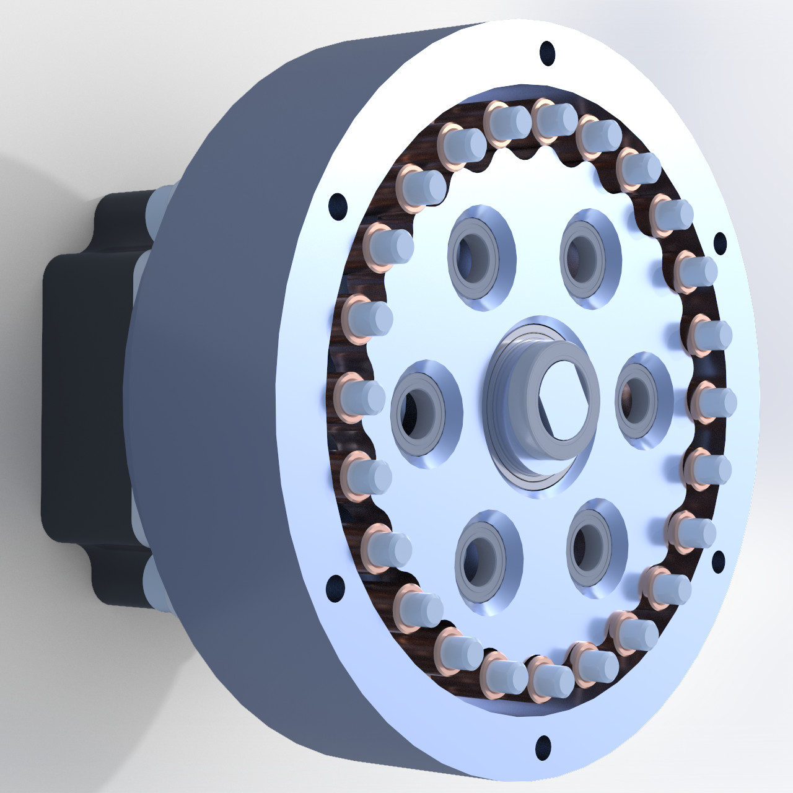
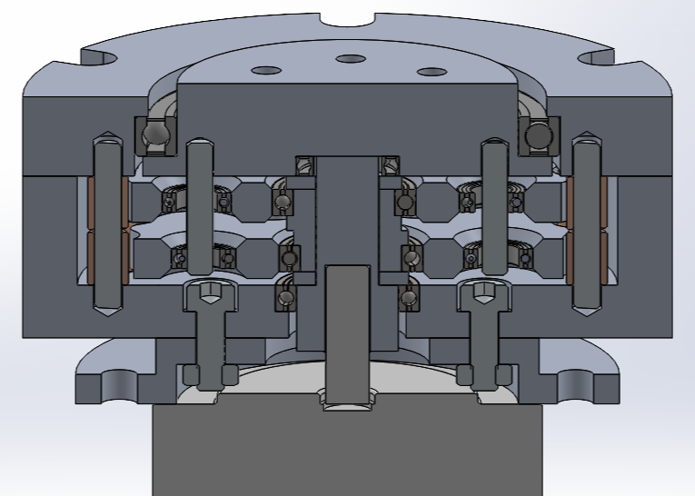

Cycloidal Actuator

Design and manufacture of a cycloidal actuator with the following goals:
- A reduction ratio (gear ratio) of 23:1
- An efficiency above 85%
- Ease of integration with other systems
- Robust, reliable, compact, and lightweight design
How
Used SolidWorks to draft parametric models of the drive, exploring different configurations. Developed a Python Matplotlib script to output a visualization of the desired cycloidal gear and its pins based on geometric inputs. Implemented design decisions informed by academic research focused on efficiency and stress concentrations.

Why
Leveraged SolidWorks' parametric design functionalities for quick design iterations. Used the Python script to parse equations and generate spline profiles for cycloidal gears in SolidWorks, expediting parameter selection. Grounded design decisions in research for optimal results.
Results
3D-printed a functional model after tolerance analysis, with plans to machine all parts after testing for maximum torque and efficiency. Prototype achieved no backlash and successfully integrated with a NEMA 23 motor.